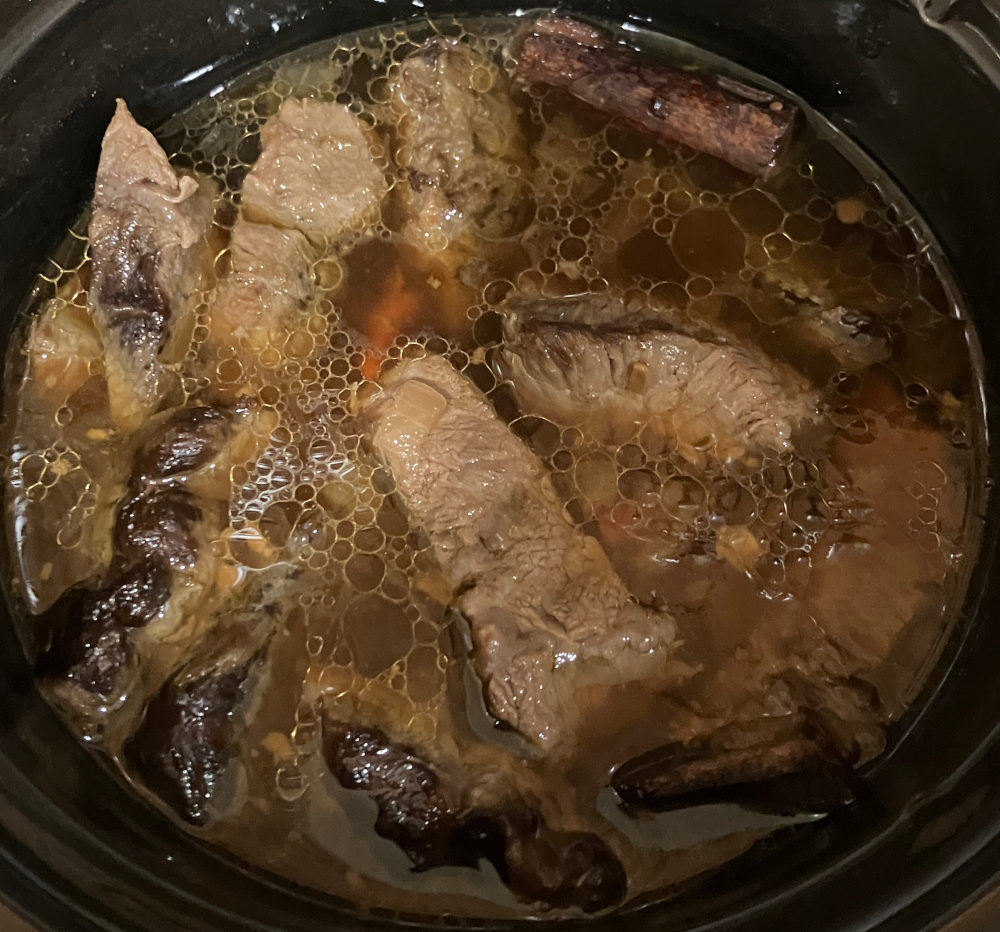

红烧牛肉 ★ Braised Beef
 3-4 servings
3-4 servings 3 hours
3 hours-
 youtube
youtube
 Meat
Meat Spicy
Spicy Salty
Salty
浓郁红烧牛肉

- 1-2 磅 牛肉
将牛肉冷水清洗，用刀顺着纹路切成块。
- 1 锅 热水
用热水焯肉块，漂去浮沫，不要用凉水冲洗，直接捞出备用。
- 2-4 条 干辣椒
取干辣椒，剪开取出辣椒籽，然后冷水浸泡30分钟，滤掉液体。
- 1 小把 青花椒
开小火，锅中加入适量油，干辣椒和青花椒，煸炒4-5分钟出香味。
- 1/2 个 洋葱
放入洋葱小碎块，炒至透明以后，加入焯好的牛肉一起翻炒。可适当再加油，大火炒。
- 1 碗 开水
- 3-4 片 生姜
- 1 块 桂皮
- 1-2 个 八角
- 1 勺 生抽
- 1-1.5 勺 豆瓣酱
- 1 勺 盐
翻炒至牛肉有些许焦黄后，加入开水，没过食材即可，加入生姜，桂皮，八角，生抽，豆瓣酱，盐，一起煮开。
- -—–
转至小慢炖锅，用High炖煮，1.5-2个小时即可食用。